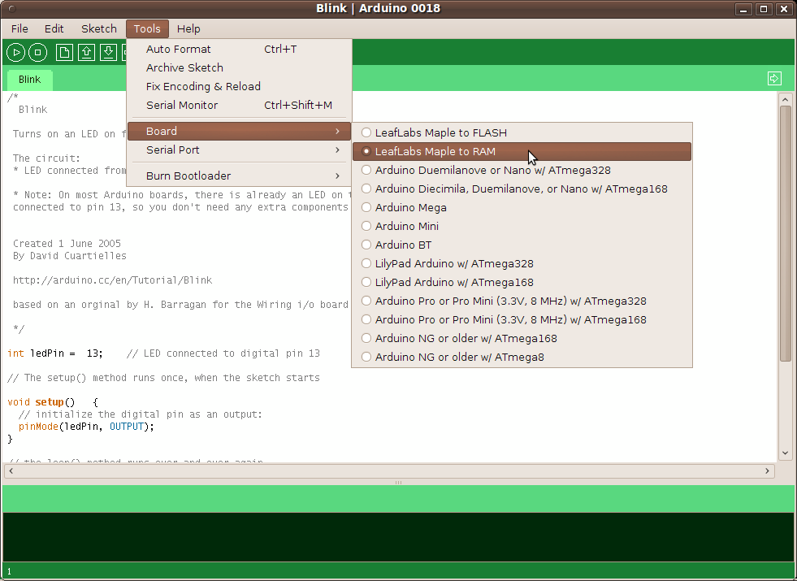
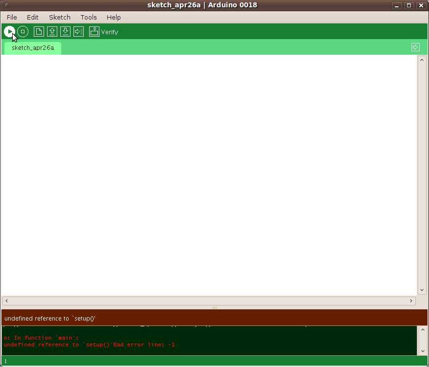
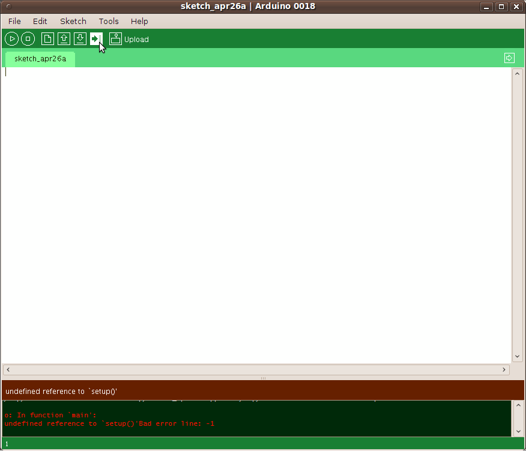

Maple Development Quickstart
You'll need a Maple board, a mini-b USB cable, a functional computer, and
possibly root (or "administrator") access to that computer.
If you have trouble along the way try the install
page for more detailed download and installation instructions, and the
troubleshooting page for help with some
common problems. if all else fails try google, our forum, or contact us directly!
The major steps when starting fresh on a computer will be to:
- Download and install the IDE
- Plug in the Maple and resolve driver issues
- Load the IDE and upload a simple Blink program
- Test the USB serial connection with a HelloWorld
1. Download the IDE
The latest binary release of the Maple IDE for can be downloaded using the
links below. The package bundles together a compiler, an upload utility, a
software library, and a simple GUI text editor. All this
software is free and open; we are grateful to the
Arduino, Codesourcery, GNU, and OpenMoko
developers, as well as many others, who allow us to reuse their software.
The IDE is written in Java and requires a compatible runtime (JRE). Our windows
release includes runtime, Mac OSX has one installed already, and it's pretty
easy to install one on Linux. If you don't have a JRE and dont know how to get
one setup see the installation page.
2. Unzip it to a appropriate home
Once it's downloaded, you need to chose a place to unzip the IDE. Unless
you've got a special place of honor in mind just plop it on your desktop or in
your home folder. Make sure you actually extract the contents out of the
archive instead of running it live out of the archive file.
On Linux only, you'll want to run the
install-udev-rules.sh at this point; it will ask for root
perimissions, then you need to restart udev (sudo /etc/init.d/udev
restart). This will grant members of 'plugdev' read/write access to
Maple devices over USB.
On Windows only, you'll have to install drivers; see the
installation page. Sorry!
On Mac OS X only, you can just drag and drop the Maple IDE folder
to install it in your applications folder. An ACM modem setup dialog will pop
up everytime you plug in the Maple; if you go to Network Settings and accept
the default ("unconfigured") settings the dialog won't pop up and everything
will work fine.
3. Run maple-ide
Double click, run from command line, or smash into the stack as appropriate!
4. Compile a program!
Let's load up a simple example program that blinks the status LED. From the
File menu select Examples, Digital, Blink. Go ahead and modify the file a
little bit: if you change the 'delay(1000);' numbers to a
different value the speed of the blink will change. The value is a time in
milliseconds to pause before continuing with the program, so by default the
LED will be on for 1 second, then off for 1 second, etc.

Next select the Maple board from the Tools pull-down under Board. You have the
option between RAM and FLASH programming: FLASH saves the program into
permanent memory so the program will be run every time the Maple is reset,
while RAM simply injects the compiled program into the processor's memory.
Programming to RAM is faster to upload and a buggy program can be wiped away
with a simple reset, while FLASH memory is larger and is the only option for
permanently uploading a program.

Press the "verify" button (furthest to the left with a "play" arrow) to compile
the code. Unless you've got a persnickety typo you should eventually get back
a confirmation message in the bottom pane.
5. Upload that program!
This is where our palms sweat...
This step was the hardest part for us to get working across several platforms
and is where a number of users run in to difficulty (especially on the many
flavors of Windows). We are working on a more robust software solution, but in
the meanwhile if you have trouble you could try repeating steps a few times,
power cycling the Maple, or restarting the IDE. Please let us know how
everything goes in the forums, the more datapoints the better!
Now it's (finally!) time to plug in your Maple. Use a mini-b cable, making sure
that the power source jumper is on the USB header first. The Maple should blink
a short pattern on the blue status LED every time it is plugged in, reset, or
reprogrammed, just to let you know it's there. If it ever starts throbbing in a
slow, smooth pattern that means you've got a problem: see the troubleshooting page.

If all systems are go, select the Board type and Serial Port (something like
/dev/ttyACM0, /dev/cu.usbmodem5d21, or
COM3 depending on your platform) from the Tools menu. Then press
the "upload" button (right arrow to a bunch of dots) to upload your program to
the Maple. You should see some text and a progress bar flash by in the status
window of the IDE, then some blinky patterns on the Maple, and then a constant
blink with whatever time period you programmed in above.
6. Use the serial port monitor!
As a last step to make sure everything has been configured correctly, let's
upload a hello world program that will send text from the Maple back to the IDE
over the USB connection. From File select Examples, Stubs, HelloWorld, and make
sure the correct board and serial port targets are selected from the Tools
pull-down. And of course you could change the text to be printed out; make sure
you leave the double quotes around it though or you'll get a compile error.
Open the serial monitor window (button on the far right) and make sure the 9600
baud speed is selected. Then go back to the code editing window and upload your
program (upload will recompile your code automatically if there's been any
change since the last "verify"). You should get text spit at you over the
serial monitor right after the program is uploaded. Shout back! We can hear
you!
7. Go forth exuberantly!
We really hope you got this far and didn't frown or make a bitter lemon face
too often getting here. Where you go now is up to you: perhaps you've got some
crazy project cooking, or a longer tutorial to work through, or maybe now is a
good time for a trip to the kitchen for a delicious sandwich.
If you blew through this guide and are the kind of person who drinks their
coffee straight and has more than than a 100 lines of vim or emacs
customization and doesn't even have a mouse plugged into your computer you may
want to look at the Unix Toolchain
quickstart guide to getting working with your old friends make, jtag, and
gcc.
Let us know what you come up with! Tag internet content with #leaflabs, post
in the forums, track us down in the
real world, whatever. We love projects!
About this Document
A more recent version of this document may be available from the
LeafLabs website. Our documentation is
versioned on
github; you can track changes
to the master branch at
this link.

This documentation is released under a
Creative Commons Attribution-Share Alike 3.0 license.
Translations are welcomed; give us a ping to make sure we aren't in the
process of revising or editing first.